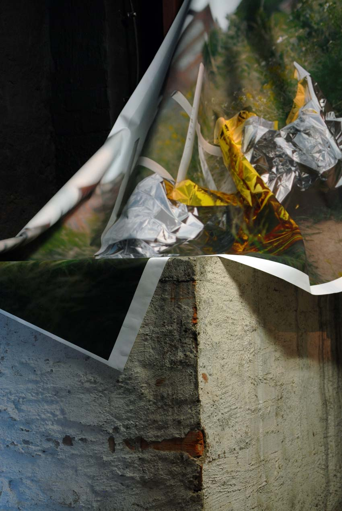
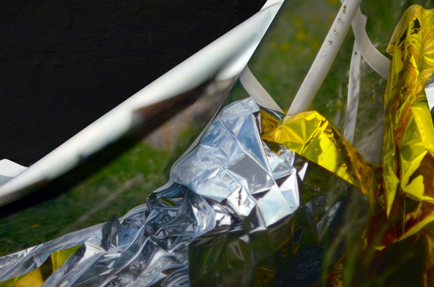

Jessica Arseneau



Scale 1 : 1
2016
Inkjet print on canvas, latex paint on wall
Print dimensions: 132cm x 252 cm
In Del rigor en la ciencia (1944), Jorge Luis Borges describes a map that was scaled exactly, inch per inch, to the province that it referred to, and that had become tattered over the years. Among several interpretations of this text, the envelope and the copy allegory convey that desire of absolute mastery of space and its mirroring.
Referring to Borge's fictive story, Scale 1 : 1 is a print on canvas, which associates with the architecture of the place while taking a sculptural and organic vocabulary.